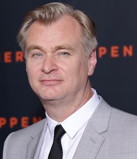
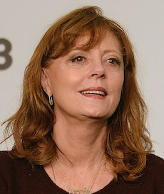

Pro-AI
Yves Bergquist (Director of the AI & Neuroscience in Media Project at USC's Entertainment Technology Center, which is funded by Hollywood studios): “The studios do a lot of the post-production work in films — particularly in animation — and there is a lot of pressure to bring costs down. The post-production companies have a software development culture, so they will embrace generative AI.”
Bob Iger (Disney CEO):
“Overall, I'm bullish about the prospects because I think they'll create efficiencies and ways
for us to basically provide better services to customers.”
Kristy Kay (Visual Development Artist and Illustrator): “I was nervous when I first saw some of the artwork created by AI technology based on a given prompt. At first I felt a sense of impending doom about how our society defines 'art', and that the touch of a human hand will lose value, making many creative jobs obsolete... including my own. Once I started playing around with it, I felt slightly more empowered, and I could see how I might incorporate it into my own work someday - mostly for reference sourcing in a similar way to google images.”
Neutral
Christopher Nolan (American director):

“I feel that AI can still be a very powerful tool for us. I'm optimistic about that. I really
am. But we have to view it as a tool. The person who wields it still has to maintain
responsibility for wielding that tool. If we accord AI the status of a human being, the way at
some point legally we did with corporations, then yes, we're going to have huge problems.”
Oliver Zeller (VFX supervisor and Art Director): “I prefer to look at AI as a team member. And not one that takes the slot of somebody else, especially not at this point. But rather somebody that helps. An entity that helps us alleviate some of the more mundane or just gives us another perspective.”
Luke DiTommaso (VFX supervisor): “AI can help to evolve the design process but can't replace the design work itself. There are few parts of the filmmaking process that are repetitive types of assembly line work, but you still need an artist behind the wheel. For example, motion capture has evolved the way an animator works, but has not become a substitute for their work. Animators are taking motion capture data and using it as a foundation to build and expand upon to reach their end goal more quickly.”
Anti-AI
James Cameron (American director): “I just don't believe that a disembodied mind that's just regurgitating what other embodied minds have said will ever have something that's going to move an audience.”
Jonathan Taplin (director emeritus at the Annenberg Innovation Lab at USC): “The biggest problem in the movies is too many formulas. There is a lack of originality, and that's why the industry isn't performing… Entertainment relies on new ideas, and this technology can't produce them.”
Susan Sarandon
(American actress):

“It's pretty clear to me that on a very primitive level, if you could take my
face, my body and my voice and make me say and do something I have no choice about, it's not a
good thing.”